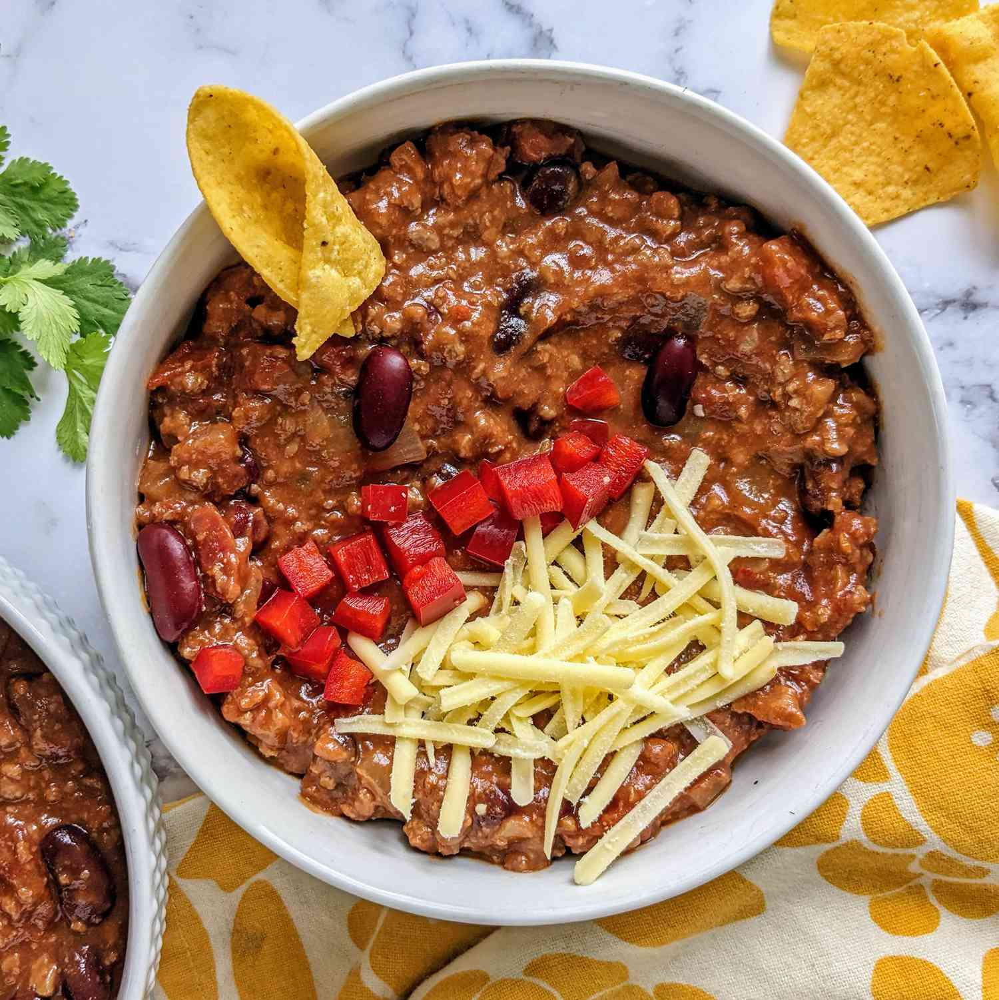

Home
Chili
This is a recipe for chili.

Description
My Famous chili is a combination of beef, beans, and vegetables stewed in a tomato based broth. Sure to keep you warm on the coldest of days!
Ingredients
- 1 lb ground beef
- 1 64oz can of Kidney beans
- 2 cans of fire roasted whole peeled tomatos
- 1 Large onion, chopped
- 2 cloves garlic, minced
- 8 oz tomato sauce
- 2 oz tomato paste
- 1 cup beef broth
- 1 fresh jalapeno, diced
- Salt and pepper to taste
Instructions
- Brown the ground beef in a large pot.
- Add the onion and garlic and cook until softened.
- Add the beans, tomatos, tomato sauce, tomato paste, beef broth, and jalapeno.
- Simmer for 20 minutes.
- Season with salt and pepper to taste.
- Serve with your favorite toppings.